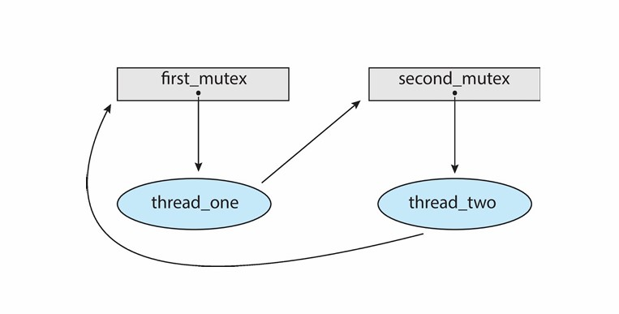
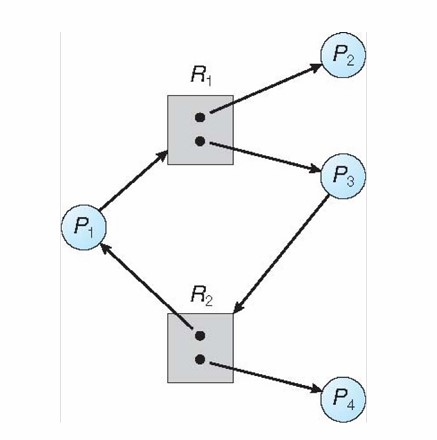
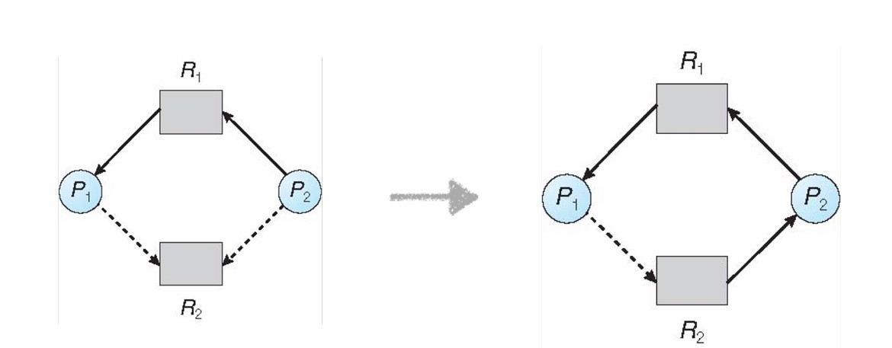

Chapter15 Deadlocks 死锁
15.1 Deadlock Problem
死锁指的是一组进程中，每一个进程都持有一定的资源，但又都请求其他进程持有的资源，于是所有的进程都跑不了。
死锁与starvation的关系是，starvation只针对一个进程，如果所有的进程都处于starvation，即为死锁。
大多数OS并不预防或者处理死锁。
例如：在下图的代码中有两个锁和两个线程。假如第一个线程执行pthread_mutex_lock(&first_mutex);，同时第二个线程执行pthread_mutex_lock(&second_mutex);，则两个锁同时被上锁；接下来，第一个线程会在pthread_mutex_lock(&second_mutex);等待第二个锁，而第二个线程会在pthread_mutex_lock(&first_mutex);等待第一个锁，二者都无法继续执行。

二者关系可用resource allocation graph来表示：

15.2 System Model
system model：
记资源为$R_1,R_2,···,R_m$，每一个$R_i$表示不同的资源类型，如CPU，内存，I/O设备等，每一个$R_i$又可以再分为$W_i$个instance，如打印机为一个$R_i$，但可用的打印机数量为$W_i$。
进程对于资源的使用分为以下三种模式：
- request
- use
- release
死锁的四个条件：
- mutual exclusion： 互斥，资源的instance一次只能被一个进程使用
- hold and wait： 进程持有资源时会等待其他资源，而这些资源被其他进程持有
- no preemption： 资源无法抢占，只能在持有的进程完成任务后被主动释放
- circular wait： 进程之间的相互依赖与等待形成闭环
resource allocation graph：
两种节点：
- 方形节点表示资源种类$R_1,R_2,···,R_m$
- 圆形节点表示进程$P_1,P_2,···,P_n$
两种边：
- request edge：$P_i\rightarrow R_j$，表示进程请求某种资源
- assignment edge：$R_j\rightarrow P_i$，表示资源正在被某些进程占用

方形节点中的小方框表示该资源拥有的实例。
例一：
$P_1$占用$R_2$的一个实例，等待$R_1$； $P_2$占用$R_1$的一个实例和$R_2$的一个实例，等待$R_3$； $P_3$占用$R_3$的一个实例。 不存在死锁。
例二：
存在死锁。
例三：  不存在死锁。 可以先执行$P_2$和$P_4$，然后执行$P_3$和$P_1$。
综上：
- 图中无环路：没有死锁
- 图中有环路：
- 环路中每个资源只有一个instance：死锁
- 环路中有资源有不止一个instance：可能死锁
15.3 Handling Deadlocks
Prevention
打破死锁的四个条件。
防止mutual exclusion：
对于可共享的资源不需要保持互斥，但对于不可共享的资源需要保持互斥。
防止hold and wait：
要求进程在执行之前不占用任何资源，先请求所有需要的资源；如果拿不全所有需要的资源，则释放掉所有手头上的资源。
但是这样会导致资源的利用率低下，容易造成starvation。
防止no preemption：
如果一个进程请求的资源不可用，则其会释放当前占用的所有资源，这些被释放的资源会被进程记录下来，以便后续重新请求，该进程只有得到所有请求的资源后才能重新开始执行。
依然会有starvation。
防止circular wait：
对资源进行排序，规定进程在请求资源时要按照顺序，例如进程已经持有了$R_i$，就不能去请求$R_1\sim R_{i-1}$，只能请求$R_{i+1}\sim R_m$。这样就不可能形成环路。
现在很多OS采用这种策略，是打破四个条件中最常见的。但问题是进程的需求是不确定的，可能某个进程占用$R_2$后才发现其需要$R_1$。
例：
上面的代码实现了从一个账户转账到另一个账户。如果我们给两个账户的锁进行排序，则其只能满足单向的转账。
Avoidance
计算会不会出现死锁，具体需要计算每个进程请求哪些资源，以保证系统不会进入环路。
但只是理论上的，因为需要提前计算。
资源分配的状态包括：
- 可用的和已被分配的资源数量
- 进程的最大需求
safe state：
系统所处的一个状态，所有的进程都能请求到资源，并被满足。其需要在一开始被计算。

safe state能够保证一定没有死锁，但就算是unsafe state也不一定会有死锁，因为是否安全的界限划分是按照进程所需资源的最大值来计算的，相当于是最坏情况。
Example：
假设总共12个资源，当前可用3个，三个进程的占用情况和需求如下：
| $~$ | max need | current have | extra need |
|---|---|---|---|
| $P_0$ | 10 | 5 | 5 |
| $P_1$ | 4 | 2 | 2 |
| $P_2$ | 9 | 2 | 7 |
安全序列为：$P_1\rightarrow P_0\rightarrow P_2$
$P_1$还需2个，剩余可用的有3个，因此满足要求，$P_1$先执行，执行完后返回占用的资源，此时剩余可用的有5个，其满足$P_0$需求，因此$P_0$接着执行，执行完释放资源后剩余可用的有10个，最后执行$P_2$。
若一开始剩余可用的资源只有2个，则不存在safe state，因为执行完$P_1$后剩余可用的资源只有4个，无论是$P_0$还是$P_2$都满足不了。
Single-instance Deadlock Avoidance：
如果每种资源都只有一个instance，则使用resource allocation graph计算解决。
加入新的一种边：claim edge
$P_i\rightarrow R_j$，表示进程$P_i$可能会用到$R_j$，用虚线表示。
当进程向资源发出请求时，claim edge转化成request edge。
当资源被分配给进程时，request edge转化成assignment edge。
当资源被进程释放后，assignment edge转化成claim edge。
引入claim edge之后，如果将claim edge转化成assignment edge后也不会形成环路，则说明处于safe state。

如上图，其转化后会成环，因此不是safe state。
Banker's Algorithm：
如果资源可能有多个instance，则使用banker's algorithm解决。
与之前的例子类似，只不过现在有三种资源$A$，$B$，$C$，分别有10、5、7个实例。经过计算，执行顺序可以为$P_1\rightarrow P_3\rightarrow P_4\rightarrow P_2\rightarrow P_0$，因此是safe state。

Detection
在系统已经进入死锁的状态下检测出来。
Single Instance Resources：
若资源都只有单一实例，则使用wait-for graph来进行检测。
wait-for graph是在原本resource allocation graph的基础上进行修改的，将全部的资源节点移除，将进程节点直接相连，如下图所示：

每隔一段时间都需要使用检测算法检测wait-for graph，如果出现回路则说明存在死锁，这个算法的时间复杂度是$O(N^2)$。
Multi-instance Resources：
若有资源有多个实例，则使用与banker's algorithm类似的方法检测，不同之处在于一开始没有剩余可用的资源，而是全部分配好，检查是否可以顺利执行。
例如：

可以按照$P_0\rightarrow P_2\rightarrow P_3\rightarrow P_1\rightarrow P_4$的顺序执行，但假设$P_2$的request变成0 0 1，则出现死锁。
Recovery
将系统从死锁中恢复，有以下两种方法：
OptionⅠ：
- 结束所有死锁的进程
- 一个一个结束，直到没有死锁
OptionⅡ：
选择一个进程释放资源，让其等待。